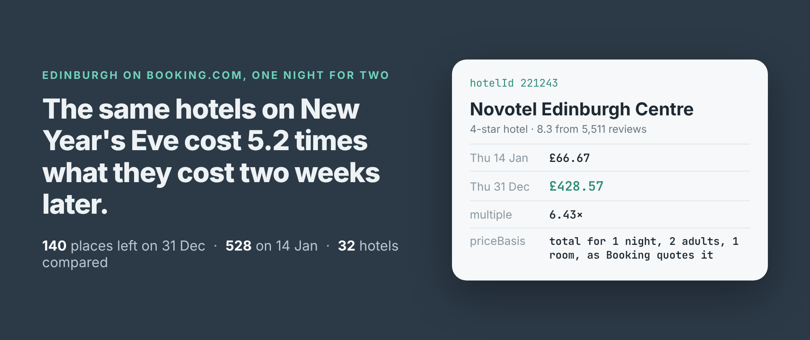
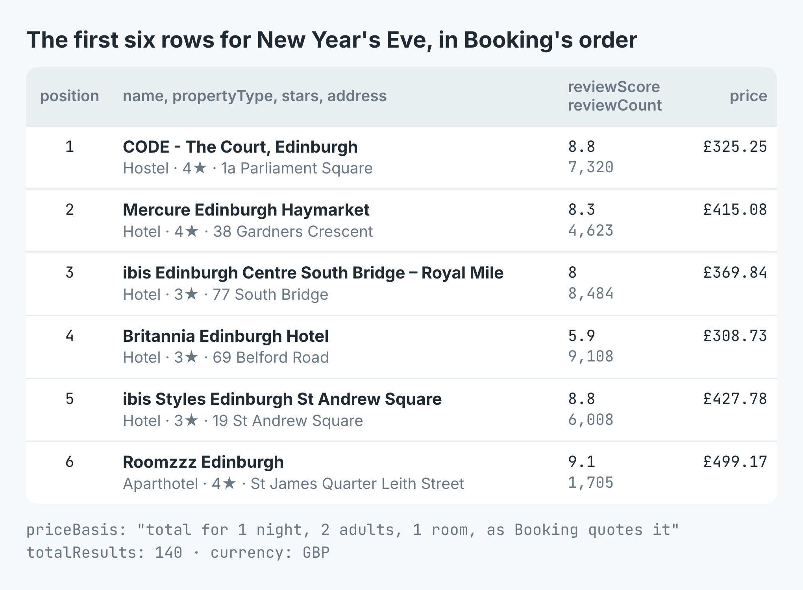
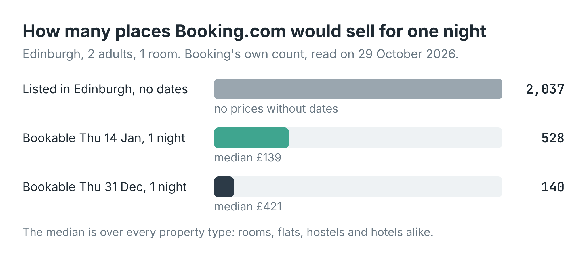

How much more do Edinburgh hotels cost on New Year's Eve? (Booking.com prices for the same hotels, two weeks apart)
I wrote this with an AI assistant. The runs, numbers and code are real, and I checked them.

The Novotel in Edinburgh's centre wants £66.67 for two people on the night of Thursday 14 January. On Thursday 31 December, New Year's Eve, the same hotel wants £428.57. Same hotel, same booking, two people, one night. That's 6.4 times the price.
The Novotel isn't unusual. I asked Booking.com for every place in Edinburgh on both nights, two weeks apart, and matched them up. The 32 hotels that were bookable on both nights cost a median £399.93 on Hogmanay and £71.27 in January: 5.2 times as much.
Two searches and a join
I build and run a Booking.com scraper on Apify. Give it a destination and dates and it returns a row for every property Booking would sell you: name, Booking's own hotelId, property type, stars, review score and count, address, coordinates, and price, which is Booking's total for the whole stay. Every row also carries priceBasis, which says exactly what that total covers. Here it read "total for 1 night, 2 adults, 1 room, as Booking quotes it". No Booking account and no key.
import { ApifyClient } from 'apify-client';
const client = new ApifyClient({ token: process.env.APIFY_TOKEN });
const run = await client.actor('simple.actor/booking-hotels').call({
queries: ['Edinburgh'], currency: 'GBP', adults: 2,
checkIn: '2026-12-31', checkOut: '2027-01-01', maxHotels: 300,
});
const { items } = await client
.dataset(run.defaultDatasetId).listItems();
for (const h of items) console.log(h.price, h.name, h.hotelId);
I ran that twice on 29 October 2026, once for each night, and joined the two lists on hotelId. The New Year's Eve search took 6.5 seconds, the January one 16.5.

The first six New Year's Eve rows, with their positions, review scores and prices as Booking gave them.Most of the city is already gone
The first thing the runs show is how little is left. Without dates, Booking lists 2,037 properties in Edinburgh. For one night on 14 January, 528 of them were bookable. For New Year's Eve, two months ahead, 140 were.

Booking's own count,totalResults, for each search. The rest weren't offered for that night at all.
Of those 140, nothing was under £150. The cheapest was a guest house at £157.14, and the cheapest hotel was The Abbey Residence at £194.88. On 14 January, 86 of the 131 hotels were under £100, and the cheapest place in the city was a hostel at £23.81. The median across every kind of place went from £139.02 to £421.43.
The same hotels, two weeks apart
A median over two different sets of places can mislead, because the cheap ones may simply have sold out. So I took only the properties that appeared on both nights. There were 113, and the median one cost 3.92 times as much on New Year's Eve.
Hotels went up the most. The 32 hotels on both lists had a median multiple of 5.2. Apartments, which are the biggest group, had 2.8, and six of them charged exactly the same on both nights.
![Thirteen hotels as dumbbells from the 14 January price to the 31 December price: ibis budget Edinburgh Park £204 at 6.1 times, Delta Hotels by Marriott £222 at 4.6, Britannia Edinburgh Hotel £309 at 8.6, Holiday Inn Express City Centre £371 at 6.6, Sheraton Grand £391 at 2.6, Mercure Haymarket £415 at 5.6, ibis Styles St Andrew Square £428 at 4.6, Novotel £429 at 6.4, InterContinental The George £542 at 4.4, Kimpton Charlotte Square £571 at 4.4, Virgin Hotels £571 at 4.2, The Glasshouse £622 at 5.8, W Edinburgh £630 at 3.5](images/same.png) Thirteen well-known hotels, matched on
Thirteen well-known hotels, matched on hotelId. The January dot is teal, New Year's Eve dark.
The budget hotels moved furthest. Britannia Edinburgh Hotel went from £35.71 to £308.73, 8.6 times. ibis budget Edinburgh Park went from £33.44 to £204.08. The five-star hotels started higher and rose less: the Sheraton Grand from £147.81 to £390.78, 2.6 times, and the W from £178.52 to £629.59. The extremes were 100 Princes Street at £2,458.73 against £252.98, and Stay Central Hotel at £726.66 against £59.96, 12.1 times.
So a cheap hotel in January is no guide to a cheap hotel on Hogmanay. On New Year's Eve the gap between a budget room and a five-star one narrows: in January the Sheraton cost 4.4 times the ibis budget, on New Year's Eve 1.9 times.
What it cost
The scraper charges $0.0015 for each property it returns, and nothing for a search that can't be read. The New Year's Eve search returned 140 properties, $0.21. The January one returned 520, $0.78. The count without dates was one property, $0.0015. A caller would pay $0.99 for the whole comparison.
Most of that is the January list, which I read in full so that every New Year's Eve property had a chance to match. If you only care about hotels, Booking's own filter ht_id=204 in the filters field leaves out the flats and rooms, and you pay for fewer rows.
What the rows won't tell you
Prices move while you watch. I ran the same New Year's Eve search again four minutes later to test the example scripts. CODE The Court, a hostel in Parliament Square, had gone from £325.25 to £477.25, and the ibis on South Bridge from £369.84 to £403.97. A minute after that, the count had dropped from 140 to 139, and January's from 528 to 516. Each row is what Booking quoted at retrievedAt, and for a night this busy that can be minutes old.
The row doesn't say which room. price is Booking's quote for the booking you asked for, but rooms aren't in the search results. On New Year's Eve the cheap rooms may be gone and the quote may be for a bigger one. The room list is on the hotel's own page, and every row links to it in url, but the scraper doesn't read it.
The missing places don't say why. 1,897 of the 2,037 weren't offered for New Year's Eve. Sold out, closed, or not selling a single night: the search doesn't say, it just leaves them out.
A full list can come back a few short. Booking counted 528 for January and the run returned 520 at a limit of 600. 27 of the New Year's Eve properties weren't in the January list, so they couldn't be compared.
Making it yours
Swap Edinburgh for your city and the two dates for the ones you're weighing: a festival weekend against the week after, a match day against a quiet Tuesday, the week your conference is on against the week before. Change adults and rooms to your own booking, because the prices are for exactly that. Run it every morning and you have a price history keyed on hotelId.
The full script, in Node and Python, runs both searches at once, joins them and writes a CSV with the multiple for every property. It's in the example repo on GitHub. The scraper is Booking.com Scraper on Apify.